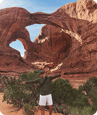

TAY MURILLO | WDD 130
I’m Tay, a creative and curious person who values time with my family above all. I enjoy staying active through sports, exploring nature, and finding balance in simple moments outdoors. I also love movies and reading, which inspire both my creativity and my personal growth. Whether it’s connecting with loved ones or learning something new, I try to live each day with purpose and joy.